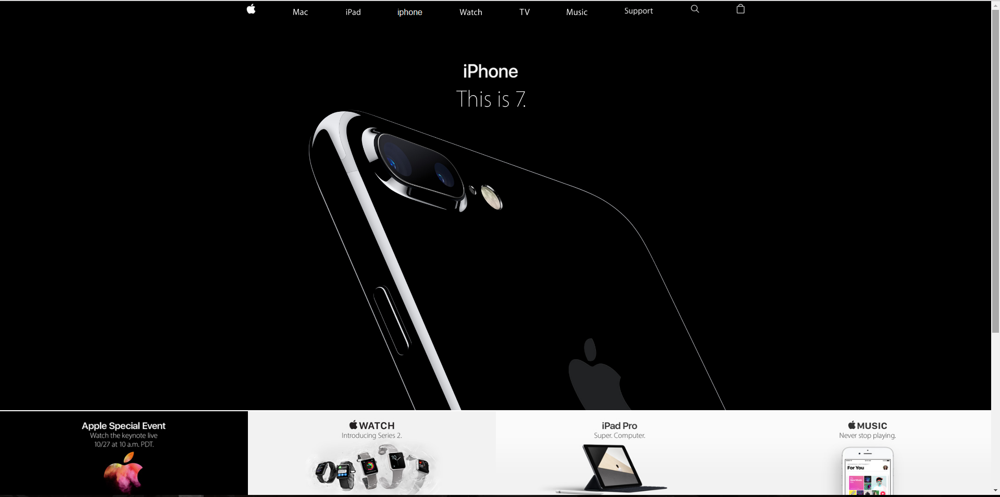
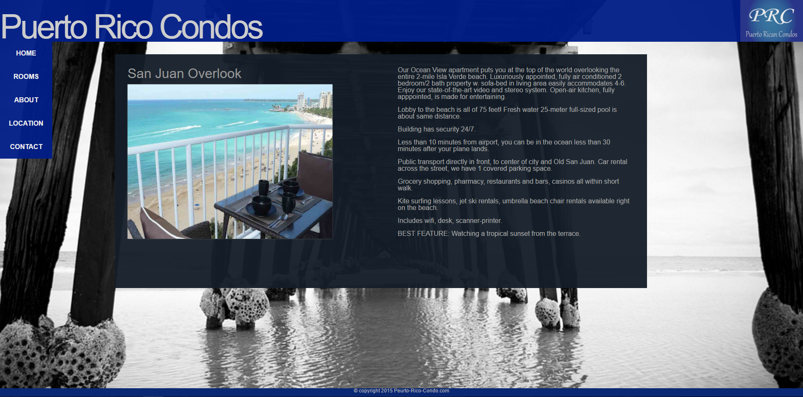

Content standard 2.0: Understanding Web Page Design and Layout
Content standard 2 Address CSS and the design behind the website, and the standerds behind how CSS forms and molds a webpage. This includes various css styling tags and technicues, along with the fundementals of design itself. Examples of this are the Apple CSS recreation, and the mock VRBO project site.
standard 2.1: Demonstrate Understanding of Color Theory as it Applies to Web Design and Development
Standard 2.1 is about the theory of design and how it applies to web development. While I don't necessarly have a great sense of design, I do understand that a white background with neon yellow text is a n atrocity to web design. To accomplish basic design I need to know the difference of graphics editors, such as photoshop, illustrator, or even Gimp. This also includes the various formats that come with them, such as Vector vs Raster formats. Once being pixel RGB based, and the other being a mathematical line to avoid pixelization. (also includes hex, rgba, and color name control in CSS). The examples provided show color and media control in CSS.
standard 2.2: Enchance Web Pages with List, Images and Background-Images
Standard 2.2 includes floating and adjusting images, as well as working with image and background properties. All sub sections can be found on this website and the examples bellow. On this site in particular, I am using an image float left, as well as a tiled background image, both were completed in CSS. The clear property removes an undesired float that carried onto a tag, creating an undesired effect. The clear property is the only section that I do not have an active example.
standard 2.3: Demonstrate Understanding of and Use the Box Model
Controlling container size, resolution, overflow, and using the box model is the basis of standard 2.3. Suprisingly the entire standered is covered in this varry conatiner, but more examples can be found in the Apple site and VRBO site. The box model is essentially the padding-margin relationship accompanied with the conent, width and height of the containter. If you need something to scale with resolution, the use of media tags or percentages is the optimal choice.
standard 2.4: Demonstrate the Ability to Effectively Design and Layout Web Pages Using CSS
Standard 2.4 is the overall accessability and feel of the site. Media tags can be used to adjust to multiple resolutions, but this requires more work and create a large style sheet. The use of multiple style sheets can help break this down by linking an HTML page with several stylesheets, each corolating to a vrious resolution (example use). The print stylesheet is used for printing a webpage. I actually have never used this, but I remeber looking into it. Some of these, such as the position property can easily by found throughout my example sites.
 